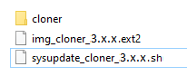

Il “Cloner” serve per fare una copia di backup di un applicativo ed eventualmente usarla per aggiornare altri dispositivi (dello stesso modello).
Procedura di BACKUP:
Copiare i file img_cloner_3.x.x.ext2 e sysupdate_cloner_3.x.x.sh nella cartella principale di una pen drive USB (formatta FAT32 a singola partizione - ms-dos MBR).
Attenzione: NON utilizzare il browser “Edge” perchè modifica l’estensione dei file.
Attenzione: NON devono essere presenti altri file di aggiornamento: sysupdate_…
Spegnere il dispositivo.
Inserire la chiavetta USB (se il dispositivo ha una micro-USB, utilizzare un adattatore micro-USB (tipo A) → USB).
Accendere il dispositivo.
Premere il tasto “BACKUP”.
Scrivere il nome desiderato e premere
Il processo di BACKUP è terminato quando si legge la scritta “Operation ‘Local file system’ completed.”
Spegnere il dispositivo.
Togliere la pen drive USB.
Sulla pen drive verrà creata una cartella “cloner” all’interno della quale sarà presente la copia di BACKUP.
Procedura di INSTALL:
Copiare nella cartella principale di una pen drive USB (formatta FAT32 a singola partizione - ms-dos MBR):
i file img_cloner_3.x.x.ext2 e sysupdate_cloner_3.x.x.sh.
Attenzione: NON utilizzare il browser “Edge” perchè modifica l’estensione dei file.
la cartella “cloner”.
Attenzione: All’interno della cartella “cloner” dovrà esserci una cartella con il nome del “backup” che è stato fatto nella procedura di BACKUP. All’interno di questa cartella dovrà esserci il file “localfs.tar”.


Verificare che non ci siano altri file di aggiornamento: sysupdate_…
Spegnere il dispositivo.
Inserire la chiavetta USB (se il dispositivo ha una micro-USB, utilizzare un adattatore micro-USB (tipo A) → USB).
Accendere il dispositivo.
Selezionare dal menu a tendina la versione che si vuole installare.
Premere il tasto “INSTALL”.
Il processo di INSTALL è terminato quando si legge la scritta “Operation ‘Local file system’ completed.”
Spegnere il dispositivo.
Togliere la pen drive USB.